Niche Scout · LLM Wiki проєкту «Clean Schedule»
Оновлено: 27.09.2026 · база: deep-dive NS 01.09.2026 (SensorTower) + жива видача й ВІДГУКИ App Store 27.09.2026 + Apple Ads 08.2026 · це робочий документ проєкту — кожна сесія, що працює над застосунком, читає його першим
Розклад домашнього прибирання: усе, що знаємо, в одному місці
Рішення власника: робимо застосунок у цій ніші. Ігровий дизайн, вигаданий МАСКОТ-друг, підхід Chorefriend (фото безладу → мікрокроки), платить доросла аудиторія. Нижче — ринок, конкуренти, їхні фічі, біль із відгуків, ASO-ключі, варіанти назви й напрям маскота.
Зміст
1. Ринок і гравці (цифри)
2. Маркетинг: хто купує трафік
1а. 🔭 Вотчліст (Squeaky)
3. ASO: ключі, складність, популярність
4. Відгуки: за що платять і на що лаються
5. Фічі конкурентів + що робимо ми
6. Назва: варіанти й перевірка
7. Маскот та ігровий дизайн
7а. Shot list для дизайн-сесії
7в. Іконка: композиція > колір
7г. ПРОМТ для Claude Design
7б. Розкадровка референсів
8. Потенціал ніші
9. Методологія
Ринок ядра
$330K/міс
16 гравців · SensorTower, deep-dive 01.09.2026
Лідер
Sweepy 33%
$110K/міс найдешевшим чеком $19.99/рік — велетня в ніші немає
Доведений темп
$26K / 2 міс
Chorefriend: реліз 30.06.2026 → #41 US House&Home за 60 днів
Аукціон Meta
2 з 16
стільки гравців реально купують трафік — вхід дешевий
1. Ринок і гравці
Chorefriend: реліз 30.06.2026 → $26K/міс і #41 US House&Home за 60 днів, без бренду. Ринок ≈$330K/міс, велетня немає (лідер Sweepy $110K = 33%), у Meta реально лише 2 рекламодавці на 16 додатків — аукціон майже порожній. Контрольна група вбудована в саму нішу: Homsy і Home Routines без платного трафіку сидять під $5–10K у тих самих гео. Правила входу з бази: чек $20–40/рік (не $100+), тільки tier-1 гео, креатив «фото безладу → мікрокроки з таймінгом». Вільне суміжне вікно — дитячі chores (NeatKid $6K/міс органікою, аукціон нуль).


Уся ніша (SensorTower-цифри — deep-dive 01.09.2026; іконки й посилання живі)
| Додаток | Дохід/міс | Завант./міс | Реліз | Монетизація | Реклама | Вердикт NS |
|---|---|---|---|---|---|---|
| Sweepy | $110K | 40K | 2020 | $3.99/міс, $19.99/рік | ~10–12 | Ревеню-лідер (39% ядра) найдешевшим чеком |
| Tody | $50K | 30K | 2013 | $9.99–79.99/рік | 0 | Найсильніший moat: бренд + рейтинг 4.82 |
 HomeTasker HomeTasker | $30K | 35K | 2022 | До $109.99 lifetime | Active iOS | Найдорожчий чек дає втричі менше за Sweepy: вирішує гео, не ціна |
| Chorefriend | $26K | 14K | 06.2026 | $6.99/тиж – $69.99/рік | ~4 | Головний доказ відкритого вікна |
 FlyLady FlyLady | $22K | <10K | 2016 | $1.99/тиж – $37.99/рік | Active iOS | Контент-моат: найвища монетизація на завантаження |
| TOM суміжний | $20K | <5K | 2019 | $3.99/міс | 0 | Медійний бренд — індикатор попиту, не конкурент |
 BeTidy BeTidy | $15K | <10K | 2023–24 | $23.90–35.90/рік | Active iOS | DACH-вікно: німець платить без US-конкуренції |
 Flatastic Flatastic | $12K | ~10K | 2015 | $18.49–34.99/рік | Active iOS | Суто DACH flat-share; за 10 років не вийшов за DE |
 Nipto Nipto | <$10K | ~10K | 2020 | $12.99/рік | Active iOS | 671K інсталів без грошей: кут «хто винен» не платить |
 Tidy недооцінили Tidy недооцінили | <$10K (ST, під питанням) | <10K | 02.2022 | Free + IAP, за відгуками hard paywall | — | ЖИВИЙ І РОЗВИВАЄТЬСЯ: 1 857 відгуків, ★4.67, версія 5.3.0 від 24.09.2026. Позиціювання «AI Checklist & Chores Tracker». Цифра ST явно застаріла — занести в наступний прогін окремо |
 Housy Housy | <$10K | <10K | 2021 | $0.99–34.99 | — | Згасає: хаос тарифів / трафік із RU |
 NeatKid дитяча вертикаль NeatKid дитяча вертикаль | $6K | 5K | 2024 | $3.99–69.99 | 0 | Платить батько → вищий ARPU; аукціон порожній |
| Homsy 01.2026 | <$10K | <10K | 01.2026 | $19.99/рік | 0 | Контроль: без UA удвічі повільніше за Chorefriend |
 Home Routines Home Routines | <$5K | <5K | 04.2025 | $19.99/рік | Active | Ніша карає слабкий UA, а не пускає всіх підряд |
 Chore Focus (ADHD) Chore Focus (ADHD) | <$10K | <10K | 2023 | $29.99/рік | 0 | ⚠️ ADHD-таргет у Meta = бан акаунта; кут формулювати через «перевантаженість» |
| Дозняте живою видачею 27.09: Chorsee (11,8K відгуків), Chorly, ChoreBuddy | поза базою ST | — | 2022–25 | підписки | — | Chorsee — сильний chore-трекер для сімей, у deep-dive не потрапив; занести в наступний прогін ST |
| Squeaky: Cleaning Schedule 07.2026 | ≈$0 | ≈0 | 26.07.2026 | Free + підписка | 0 | Мертвий старт: 2 місяці, версія досі 0.1.0, 0 відгуків у US і RU (перевірено 27.09). Третій свіжий вхід у нішу за 2026 — вікно бачать багато хто, виграє виконання + трафік |
🔭 Вотчліст — рішення власника 27.09.2026: стежимо
Squeaky: Cleaning Schedule (Animum Rege LLC) — зараз мертвий (v0.1.0, 0 відгуків), але сидить на ключі «cleaning schedule» У НАЗВІ і на найближчому до нашого імені бренді. Якщо прокинеться — це найпряміший конкурент Moppy.
- Що перевіряти раз на місяць (одна хвилина, живі дані):
curl -sS "https://itunes.apple.com/lookup?id=6788211354&country=us"— версія (>0.1.0 = ожив), userRatingCount (>0 = пішли люди), currentVersionReleaseDate (свіжа = команда працює). - Реклама: його Meta Ad Library — зараз порожньо; поява хоч одного оголошення = сигнал тривоги.
- Тривога спрацювала → зняти його сторінку стора (фічі, ціни, скріншоти) і оновити цю вікі того ж дня.
- Постійне стеження без рук: коли нішу «cleaning» заведемо в Apprism (форма «+ ніша»), щоденний трекер видачі сам почне бачити його позиції по всіх ключах ніші — окремого коду не треба.
2. Маркетинг: найпорожніший аукціон із топ-5 ніш
| Хто | Канал | Обсяг | Як довго | Контент |
|---|---|---|---|---|
| Sweepy ($110K) | Meta, iOS-install | ~10–12 | безперервно з січня 2025 | сторінка «Sweepy - home cleaning app» |
| Chorefriend ($26K/2 міс) | Meta, обидві платформи | ~4 | з липня, свіжі креативи 31.08 | «фото безладу → 7–12 мікрокроків із таймінгом» — готовий шаблон |
| FlyLady ($22K) | — | 0 своїх | — | чужа сторінка «Kristina Cook» (TidyMinds) крутить ~5 оголошень ПРОТИ FlyLady/Sweepy |
| решта 13 гравців | — | 0 | — | — |
2 реальні рекламодавці на 16 додатків. ⚠️ ADHD-кут конвертить (відгуки нижче це доводять), але прямий ADHD-таргет = бан акаунта Meta — формулювати через «перевантаженість», не діагноз. TikTok по ніші ще не міряний (прогін t3a7473 на дошці Spilno; ключі ніші вже в списку).
3. ASO: ключі, складність, популярність — одна таблиця
Складність —
20 × log10(1 + медіана відгуків топ-10 видачі), жива видача iTunes (26–27.09.2026). Популярність — Apple Search Ads, зріз 08.2026, наш трекер (перевірено 27.09: cleaning, chores, cleaning schedule).| Ключ | Складність | Медіана відгуків топ-10 | Популярність (Apple Ads) | Читання |
|---|---|---|---|---|
| house cleaning checklist | 68 | ~2 400 | нижче топу жанру* | Найкращий вхідний ключ: досяжний з перших місяців, точний біль |
| chore chart for family | 66 | ~1 900 | нижче топу жанру* | Другий вхідний; у топі велетні-«сімейні органайзери», але пів топу — карлики до 3K відгуків |
| chore app | 81 | ~10 700 | нижче топу жанру* | Видача брудна: Chrome-розширення, дитячі чарти, Sweepy/Tody. На другий рік |
| cleaning schedule | 80 | ~10 600 | нижче топу жанру* | Головний ключ ніші, у топі всі лідери. АЛЕ: у тому ж топі «ADHD Cleaning Checklist» із 4 відгуками і «Routinely» з 0 — Apple пускає свіжих за релевантністю. Ключ у НАЗВУ з першого дня |
| cleaning / chores (однослівні) | — | — | нижче топу жанру* | Однослівники з'їдають іграшки-клікери (Chores! від Lion Studios — 109K відгуків). Не наша земля |
* «нижче топу жанру» — НЕ нуль пошуку: Apple Ads віддає рівень лише словам із топ-~500 свого жанру, і ЖОДЕН ключ прибирання туди не входить (перевірено і вчора по всьому ядру, і сьогодні точково). Це добре для нас: означає, що й конкуренти не бачать цих обсягів у кабінеті — гра йде на органіці й Meta, а не в ASA-аукціоні.
4. Відгуки: за що люблять, на що лаються, що просять
Прочитано найсвіжіші відгуки App Store US (по Flatastic — DE): Chorefriend, Sweepy, Tody, Nipto, HomeTasker, Flatastic — ~150 відгуків, знято 27.09.2026 живим RSS-каналом Apple. Google Play цим каналом не читається — його відгуки додасть агент власника разом із SensorTower-прогоном. Цитати нижче — дослівні.
За що ЛЮБЛЯТЬ і платять (це ядро нашого продукту)
1. «Скажи мені, що робити СЬОГОДНІ» — тема №1 у всіх лідерів. Люди платять не за список справ, а за зняту з голови відповідальність планувати.
«I don't have to remember anything, Sweepy just tells me what to do every day» · «takes the guesswork out of who-does-what and when» (Tody)
2. Мікрокроки проти перевантаження (ADHD-мова без діагнозу) — друга за частотою тема; саме вона в топових 5★.
«helps my brain feel less overwhelmed instead of giving me another thing to manage» (Sweepy) · «bite-sized pieces… executive dysfunction. Genuinely life changing!» (Tody) · «As someone who has raging adhd… this is my #1 pick. Worth the money 100%» (Chorefriend)
3. Дім без сварок: розподіл між партнерами/сусідами
«my partner and I were looking for ways to split the chores… It couldn't have came at a better time» (Sweepy) · «No more nagging, gamified house cleanup» · «Schützt die Ehe» (Flatastic — «рятує шлюб»)
4. Гейміфікація, що ПІДНІМАЄ настрій — люблять монети, кімнату маскота Sweepy, «перемогти клубок пилу» в Tody, порівнюють Nipto з Finch (пташеня-компаньйон — головний доказ сили маскота в self-care).
«you get coins and make the little Sweepy character a room» · «you do chores to defeat this dust ball thing» (Tody) · «It's kind of like Finch» (Nipto)
5. Фото безладу → готовий план — фіча Chorefriend, яку просять ЧУЖІ користувачі у Sweepy.
«I was hoping for… take a picture of your room and give steps like ChatGPT does» (відгук у Sweepy!) · «The picture taking is cool but I kind of wish that was more the feature» (Chorefriend)
6. Відчуття прогресу
«Feels good to check items off my list» · «It gives you a sense of accomplishment» (Tody)
На що ЛАЮТЬСЯ (наші заборонені граблі)
- Білінг-пастки — джерело майже всіх 1★: тріал, що мовчки списує рік ($70 у HomeTasker), «charged me not cool» (Chorefriend), сапорт не відповідає. Правило нам: тріал із нагадуванням перед списанням, чек $20–40/рік, видимий шлях скасування. Це не етика, це ASO: одна хвиля таких відгуків топить рейтинг назавжди.
- Сімʼя за пейволом: у Sweepy +$20 за кожного члена сімʼї — найзліші 2★. Спільний дім — це і є продукт; ділити його на платні місця не можна.
- Зламані віджети: «the widget is completely broken and displays nothing» (Sweepy, 1★). Віджет — вітрина продукту; глючний гірше, ніж жодного.
- Рахунок-суперництво для подружжя: «it seemed to keep score — not great for spouses» (Tody). Лідерборд — опція для сусідів по квартирі, НЕ типовий режим для пар.
- Обіцяні інтеграції, що не працюють (Alexa у Nipto) — не обіцяти, поки не працює.
- Доступність за пейволом (Tody: змінити кольори — платно; людина з поганим зором пише 1★). Теми/контраст — безкоштовно.
- Hard paywall без можливості спробувати — уроки Tidy: «no free option to test it out which should have been a red flag», «so much annoying premium pop-ups», а 17-річна пише, що пішла до конкурента, бо «не можу нічого зробити». Наш вхід має давати реальну цінність безкоштовно (розділ «Межа Free/Premium»).
- Давній баг, який не виправляють — у Tidy рік не дають видалити чек-лист, і про це пишуть 1★ з датами оновлень. Баг у ядрі дорожчий за будь-яку нову фічу.
Що ПРОСЯТЬ (готовий беклог від ринку)
- Разові задачі з конкретною датою (найчастіше прохання у Sweepy й Tody — досі не зроблено!)
- Vacation mode, який нормально повертає в ритм після відпустки (Sweepy «really struggles to get us back on track»)
- Монети, що мають СЕНС: «would love a feature where we can add our own incentives or coupons» — власні нагороди сімʼї
- Групування задач по кімнаті + «закрити кімнату одним тапом»
- Не тільки прибирання: «We also add other daily tasks… just to make it more fun» — люди самі розтягують продукт на побут
- Дитячі профілі, де дитина БАЧИТЬ свій прогрес і нагороду (скарги в Sweepy і Tody, що дитячі акаунти урізані)
5. Фічі конкурентів і що робимо ми
Матриця: хто що має
| Фіча | Sweepy | Tody | Chorefriend | HomeTasker | Nipto | Flatastic | FlyLady/TOM |
|---|---|---|---|---|---|---|---|
| Авторозклад «що сьогодні» (рівень бруду, не дати) | ✅ ядро | ✅ ядро | частково | ✅ | — | — | метод, не двигун |
| Кімнати/зони | ✅ | ✅ | ✅ | ✅ + room scan (платно) | — | — | — |
| Фото безладу → AI-план мікрокроків | ❌ (просять!) | ❌ | ✅ УТП | ❌ | ❌ | ❌ | ❌ |
| Генерація списку БЕЗ фото Tidy | Tidy розвʼязує ту саму задачу ОПИТУВАННЯМ («AI Checklist & Chores Tracker»): відповіси на питання — дістанеш список. Відгук дослівно: «When you answer the questions, it gives you a list of chores… not helpful for me». Це наш головний аргумент за фото: камера бачить РЕАЛЬНИЙ стан кімнати, а квіз — лише уявлення людини про нього | ||||||
| Маскот/гра | частково: монети, кімнатка Sweepy | ворог-«клубок пилу» | тон «друга», без персонажа | ❌ | очки-змагання | ❌ | ❌ |
| Сімʼя/сусіди, ролі | ✅ але за $ | ✅ зі «score»-проблемою | ❌ соло | ✅ | ✅ ядро | ✅ WG + покупки + витрати | ❌ |
| Дитячі профілі/нагороди | урізані | очки→центи, криво | ❌ | ❌ | ✅ дітям заходить | ❌ | ❌ |
| Віджети | є, ЗЛАМАНІ | є | є | є | — | — | — |
| Live Activity на лок-екрані ключ до конверсії | ❌ | ❌ | ✅ «план майже готовий» + RESUME | ❌ | ❌ | ❌ | ❌ |
| Разові задачі з датою | ❌ (топ-прохання) | слабко | ✅ | ✅ | ✅ | ✅ | — |
| Контент-програма (готові рутини-методики) | ❌ | ❌ | ❌ | пресети | ❌ | ❌ | ✅ уся цінність |
За що реально підписуються — вага теми у прочитаних відгуках
«Скажи, що робити сьогодні» — авторозклад
10/10
Мікрокроки проти перевантаження
9/10
Дім без сварок (пара/сусіди)
8/10
Маскот + гра з сенсом
7/10
Фото безладу → план (AI)
6/10
Живий віджет «одна наступна справа»
4/10
Разові задачі + дати (гігієна)
4/10
Дитячі профілі з нагородами
3/10
Вага = частота теми у ~150 прочитаних відгуках (одна серія, один відтінок; джерело — App Store 27.09.2026). Перші пʼять — за них ПЛАТЯТЬ; наступні три — «гігієна», без якої лаються, але окремо за них не підписуються. Важливо: це ваги УТРИМАННЯ (що тримає підписку). У ПРИДБАННІ порядок інший — там скан кімнати №1: саме він — креатив і перший «вау» (розбір нижче).
Скан кімнати ≠ авторозклад: дві різні фічі, дві різні ролі
ГОЛОВНА ФІЧА-ГАЧОК — скан кімнати: сфотографувала безлад → AI розписує список мікрокроків із таймінгом саме для ЦЬОГО хаосу. Це не те саме, що авторозклад, і плутати їх не можна:
- Скан (гачок, придбання): разова дія з миттєвим «вау». З неї зроблений креатив Chorefriend, що конвертить у Meta («фото безладу → 7–12 кроків»); її просять користувачі Sweepy дослівно («take a picture of your room and give steps like ChatGPT does»). Вона продає УСТАНОВКУ і робить онбординг: кімнати й задачі заповнюються з фото, а не ручним налаштуванням — найдорожчою точкою відвалу конкурентів.
- Авторозклад (двигун, утримання): постійний. Знає кімнати, частоти й «рівень бруду» і щоранку сам каже, що робити СЬОГОДНІ, без жодного фото. За нього платять рік за роком («I don't have to remember anything»).
- Звʼязка = продукт: скан породжує задачі → задачі живуть у авторозкладі → маскот веде щодня. У Chorefriend гачок без двигуна (його ж користувач: «I wish that was more the feature» — просить сканувати ЩОРАЗУ і жити зі списку), у Sweepy двигун без гачка. У нас — обидва, і скан доступний будь-коли: новий безлад — нове фото — свіжий план у той самий розклад.
Формула нашого MVP: СКАН КІМНАТИ як вхідні двері й головний креатив + авторозклад по кімнатах (двигун Sweepy/Tody) + МАСКОТ-друг, чия кімната прибирається разом із твоєю (Finch-механіка, якої нема ні в кого повноцінно) + чесна сімʼя без доплат за людину. Гігієна з першого дня: разові задачі, робочий віджет, vacation mode, теми безкоштовно. НЕ робимо: лідерборд для пар, інтеграції з колонками, ADHD-слово в таргетингу.
А доводить до покупки — LIVE ACTIVITY з маскотом на лок-екрані (прийом Chorefriend, розбір у 7б): незакрита кімната лишає Moppy з ганчіркою на лок-екрані з прогресом і кнопкою продовження. У ніші цього немає більше НІ В КОГО, дозвіл на «Дії наживо» окремий від push, а просити його треба в мить, коли план уже майже готовий.
А доводить до покупки — LIVE ACTIVITY з маскотом на лок-екрані (прийом Chorefriend, розбір у 7б): незакрита кімната лишає Moppy з ганчіркою на лок-екрані з прогресом і кнопкою продовження. У ніші цього немає більше НІ В КОГО, дозвіл на «Дії наживо» окремий від push, а просити його треба в мить, коли план уже майже готовий.
6. Назва: варіанти під ключі й маскота
Правила з ASO-зрізу: у назві мають жити ключі «cleaning schedule» / «chores» (формат стора: «Ім'я: House Cleaning Schedule»); ім'я — коротке, вимовне, з характером маскота. Патерн ніші: Sweepy, Tody, Nipto, Homsy — двоскладові з -y. Зайнятість перевірено живою видачею US 27.09.2026.
| Назва | Маскот, що з неї народжується | Зайнятість у сторі | Вердикт |
|---|---|---|---|
| Moppy фаворит | Швабра-цуцик: вухата швабра, що метляє «хвостом»-ганчіркою, радіє чистій підлозі | вільно (є лише «Moppy: Swipe Photo Cleaner» — чистка фото, інша категорія) | Коротко, мило, звучить як друг, легко анімувати. «Moppy: House Cleaning Schedule» |
| Dusty | Клубок пилу, який ПЕРЕВИХОВУЄМО: був ворогом (як у Tody) — став помічником | вільно в категорії | Сильна історія персонажа; мінус — англійською «dusty» = «брудний», подвійне читання |
| Sparky / Sparkle | Іскринка чистоти, зіронька | Sparky зайнятий іншими категоріями, Sparkle — email-апка з базою | Живі асоціації «sparkling clean», але буде плутанина |
| Squeaky | Мишеня «squeaky clean» | ЗАЙНЯТО: «Squeaky: Cleaning Schedule» (реліз 26.07.2026, v0.1.0, 0 відгуків — мертвий, але імʼя стовпить) | Викреслено — і це підтвердження, що хід думки правильний: хтось уже дійшов |
| TidyBee / Broomy | бджілка / мітла | зайнято обидва («TidyBee: Organize Your Home», «Broomy», «Broomie») | Викреслено |
| ChorePal / CleanPal | прямий «друг» | варіації існують | Запасний шлях: максимально keyword, мінімум характеру |
Рішення 27.09.2026 (власник + MARK): вертикаль лишається нішевою — прибирання, без піворотів у habit tracker (там Finch 756K, Me+ 248K, Habit Tracker 147K відгуків — найкривавіший ринок Productivity, а наша перевага і є фокус). Маскот — ІНСТРУМЕНТ-ДРУГ, не ворог-пил: інструмент прибирає РАЗОМ з тобою (логіка власника). Фаворит — Moppy, цуцик-швабра («mop dog» існує в реальності — комондор/пулі, персонаж читається за пів секунди; у швабри вбудована Finch-механіка догляду: попрацював — запилюжився — помий його тапом). У дизайн-промт ідуть ОБИДВА концепти (Moppy і Dusty) в однакових сценах: вітає зранку · радіє закритій кімнаті · запилюжився після роботи; фінальна назва — після показу людям із ЦА, суддя на запуску — креатив-тест у Meta. Іконка в обох випадках — МОРДА КРУПНО, обрізана краями (розділ 7в). Формат стора: «Moppy: House Cleaning Schedule» (ключ 80 — у назву, «cleaning checklist» 68 — у підзаголовок). Перед фіксацією: товарний знак US/EU + домен/хендли — разова робота агенту власника.
7. Маскот та ігровий дизайн — рішення власника
Власник затвердив напрям: ігровий дизайн, вигаданий маскот-друг, який милий, підіймає настрій і подобається клієнткам. Зразок тону — Chorefriend. Ринок цей напрям уже довів:
- Finch-механіка — найсильніший приклад у self-care: користувачі Nipto самі порівнюють його з Finch. Пташеня, яке росте від твоїх справ, тримає ретеншн краще за будь-які streak'и. У нашій ніші ПОВНОЦІННОГО такого персонажа немає ні в кого — у Sweepy лише кімнатка, у Tody персонаж узагалі ворог.
- Механіка Moppy: у маскота є СВІЙ дім, який прибирається разом із твоїм. Закрила кімнату — у Moppy посвітлішала його; тиждень стріку — він отримує обновку (за монети, які просили «щоб мали сенс»). Занедбала — він НЕ картає і не бруднішає назло, а сумно чекає з ганчіркою: із відгуків видно, що присоромлення = видалення.
- Тон друга, не наглядача: «клінінг-поліція» — головна причина, чому кидають Tody-подібні. Маскот каже «зробімо разом 10 хвилин», а не «прострочено 3 дні» (червоних бейджів прострочення не існує в принципі).
- Фото-фіча через маскота: сфотографувала безлад — Moppy «дивиться» на фото й пропонує 7–12 мікрокроків із таймінгом (шаблон креативу Chorefriend, який уже конвертить у Meta: «фото → кроки» і є нашим головним рекламним відео).
- Аудиторія й мова: ядро платників — жінки 25–45, tier-1 гео; мова болю з відгуків: overwhelmed, mental load, «my brain feels less overwhelmed». Слова «лінь» і «брудно» в текстах заборонені.
7а. Shot list для дизайн-сесії: які екрани яких конкурентів знімати
Знімаємо ФЛОУ цілком, не окремі красиві екрани: онбординг від першого тапу до головного, пейвол в усіх станах (до тріалу / після «пропустити» / прострочений). Відео краще за стілси (на фермі —
scripts/farm-record.sh). Іменування: <додаток>_<флоу>_<номер>. Ферма ставить із Play під тестовим акаунтом і зносить після зйомки.| Додаток | Де знімати | Що знімати | Для якої нашої фічі |
|---|---|---|---|
| Finch ⭐ | ферма (Android) | перша зустріч із пташкою · ранкове привітання · задача веде пташку в «прогулянку» · магазин обновок · тон повідомлень · пейвол | маскот-друг, монети з сенсом, тон без присоромлення |
| Chorefriend ⭐ | iPhone власника | ВЕСЬ флоу скану: камера → «аналізую» → 7–12 мікрокроків із таймінгом → виконання · онбординг · пейвол $6.99/тиж | скан кімнати (гачок №1) |
| Sweepy | ферма | онбординг · пейвол (+ окремо «член сімʼї за $20» — антиприклад) · «план на сьогодні» · кімнати/рівень бруду · кімнатка маскота + магазин · віджети | авторозклад, гейміфікація, сімʼя |
| Tody | ферма | онбординг · сетап зон/частот · індикатор бруду · бій із клубком пилу · командний score (антиприклад для пар) | авторозклад, «рівень бруду» |
| Nipto | ферма | онбординг · розподіл/ротація · очки-змагання · дитячий вигляд | сімʼя, дитячі профілі |
| Flatastic | ферма | онбординг WG · розподіл + покупки · статистика «хто перший» | сусіди по квартирі |
| Joon | ферма | дитячий онбординг · квести→звірок · батьківський пейвол | гра, платить дорослий |
| HomeTasker | iPhone | room scan (за пейволом, треба тріал) · пресети кімнат · пейвол із lifetime $109 | скан, ціновий якір |
| Unrot | iPhone | онбординг + пейвол: характер і гумор у текстах | тон текстів |
| Home Routines / FlyLady | iPhone | онбординг готових рутин-методик | контент-програми |
| NeatKid | iPhone | дитячі чек-листи, нагороди | дитячий профіль |
Скріни по ФІЧАХ: де знімати еталон і що там free/premium
| Наша фіча | Де знімати еталон | Free чи Premium там |
|---|---|---|
| Авторозклад «що сьогодні» | Sweepy (план дня) + Tody (зони з індикатором бруду) | Free в обох — це їхній гачок |
| Мікрокроки | Chorefriend (результат скану: 7–12 кроків із таймінгом) + Tody (розбивка кімнати) | Chorefriend — пейвол після 1-го скану · Tody free |
| Дім без сварок | Nipto (ротація) + Flatastic (WG) + Sweepy (household) | Nipto/Flatastic free · Sweepy: сімʼя платна, $20/особу — зняти сам цей пейвол як антиприклад |
| Маскот + гра з сенсом | Finch (весь цикл догляду, гардероб) + Sweepy (монети→кімнатка) + Tody (клубок пилу) | Free у ВСІХ. Урок: маскота за пейвол не ховає ніхто — платять за його ГАРДЕРОБ (Finch Plus) |
| Фото безладу → план (AI) | Chorefriend (камера→аналіз→список) + HomeTasker (room scan) | Premium в обох — AI має собівартість |
| Живий віджет | Finch (є лок-скрін!) + Tody (робочий) + Sweepy (зламаний — антиприклад) | Free скрізь |
| Разові задачі + дати | HomeTasker, Flatastic | Free |
| Дитячі профілі з нагородами | Nipto, NeatKid | Nipto free · NeatKid — платить батько |
Для Premium-екранів — тріали на iPhone власника: Chorefriend ($6.99/тиж, скасувати), HomeTasker (⚠️ тріал мовчки списує $70/рік — нагадування скасувати В ДЕНЬ установки), Sweepy Premium ($3.99/міс — найдешевший шлях до household-екранів).
Межа Free/Premium для НАС — виведена з ринку й відгуків
- Free: авторозклад для одного · маскот із базовим циклом догляду · віджет · 1–2 безкоштовні AI-скани (перше «вау» безкоштовне — це і креатив, і онбординг) · разові задачі · теми/контраст ЗАВЖДИ безкоштовно (1★ Tody за платні кольори).
- Premium ($29–39/рік, ОДНА ціна на всю сімʼю): необмежені AI-скани (чесно: собівартість) · сімʼя/household — але НЕ по-людно (рівно там Sweepy збирає найзліші відгуки) · гардероб і кімната маскота (модель Finch) · статистика й історія.
- Ніколи: оплата за члена сімʼї · тріал без нагадування перед списанням · доступність за гроші.
Пейвол-спліт: із цього списку виходить 5 різних структур пейволу під майбутній A/B — Sweepy (дешевий рік $19.99, мʼякий), Chorefriend (тижневий $6.99, агресивний), HomeTasker (lifetime-якір $109), Finch (емоційний «заради пташки»), Unrot (гумор). У кожного знімати: екран одразу після онбордингу · що показують після «пропустити» · таймлайн тріалу.
7в. Іконка: композиція важливіша за колір
Іконки конкурентів, знято з CDN Apple 27.09.2026 (своєї копії чужої графіки не тримаємо — це прямі адреси стора). Знято ВСЮ нішу, 10 штук: перший захід пропустив Housy (у таблиці ніші він іде в парі з Tidy) — його знайшов власник.
| Застосунок | Іконка | Домінанта | Що це означає для нас |
|---|---|---|---|
| Sweepy лідер | | блакитний, хмари | Синій — колір категорії за замовчуванням: 4 з 10. У видачі вони зливаються між собою |
| Tody | | синій + білий напис | |
| HomeTasker | | синьо-зелений градієнт | |
| Chorsee |  | синій, мітла | |
| Nipto | | мʼята, динозаврик | Єдиний зі справжнім персонажем на іконці — і персонаж працює |
| Chorefriend свіжий | | кремовий, губка-маскот | Теплий беж — рішення власника НЕ повторювати. Плюс у них SAGE — зелені галочки на пейволі (#7A9367), тому шавлієвий для нас теж закритий |
| BeTidy | | пильна троянда, хатка | Рожево-теракотова пара — обидві на СВІТЛОМУ фоні, обидві теплі |
| Tidy | | кораловий, серце в домі | |
| FlyLady | | класичний пурпур, метелик | 0 власних оголошень, маскота немає; пурпур «старший» — метод із 1999 року |
| Housy згасає | | електрик-фіолет, хатка-обличчя | Другий власник фіолетового (знайшов власник 27.09). <$10K/міс, хаос тарифів, трафік із RU — колір за ним не закріплений, але у видачі по «cleaning schedule» ми будемо поруч |
ГОЛОВНЕ ДЛЯ ДИЗАЙН-ПРОМТУ: найбільша діра в ніші — не колір, а КОМПОЗИЦІЯ. (рішення власника 27.09.2026)
- Усі 10 іконок ніші влаштовані однаково: цілий обʼєкт або символ по центру, на світлому фоні. Губка Chorefriend ціла, динозаврик Nipto цілий, хатка Housy ціла, мітла Chorsee ціла. Крупного плану не робить НІХТО.
- А еталон маскота робить навпаки. Finch — 756 тисяч відгуків, найуспішніший маскот-застосунок категорії self-care — має на іконці МОРДУ пташеняти на всю площу, обрізану краями, на приглушеному сіро-бузковому фоні. Не фігурку. Морду впритул.
- Отже іконка Moppy — морда цуцика-швабри КРУПНО, обрізана краями. Це виділить нас сильніше за будь-який відтінок, і це не здогад: у ніші так не робить ніхто, а в маскот-категорії так робить найсильніший гравець.
- Колір при цьому стає вторинним — його можна спокійно тестувати A/B, не чіпаючи персонажа. Що і робимо.
Візуальна система: три референси, кожен за своє рішення власника 27.09.2026
Після перебору кольорів наосліп власник зібрав напрямок із живих застосунків. Береться РІВНО названа частина кожного — не функціонал і не структура.
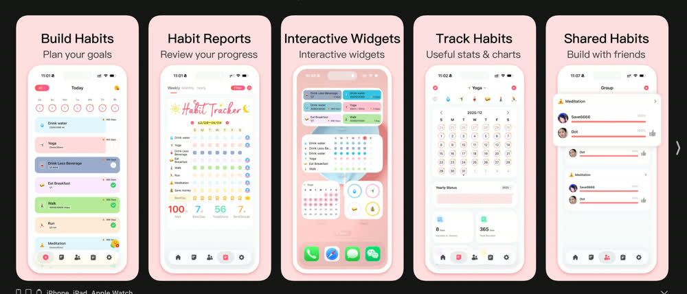
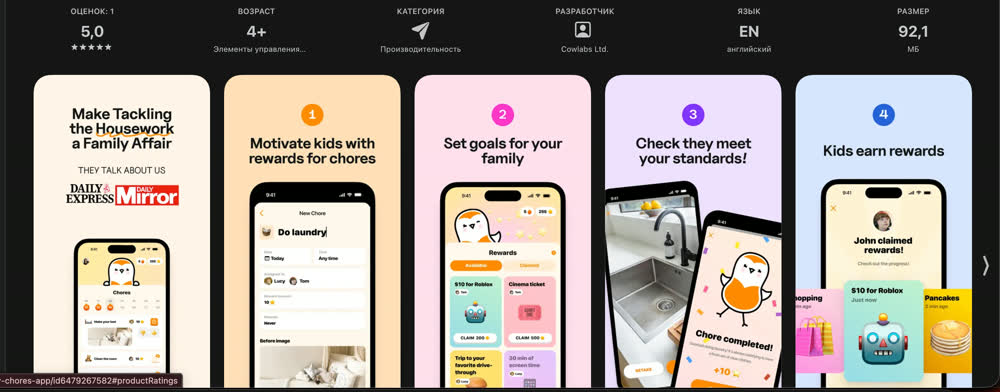
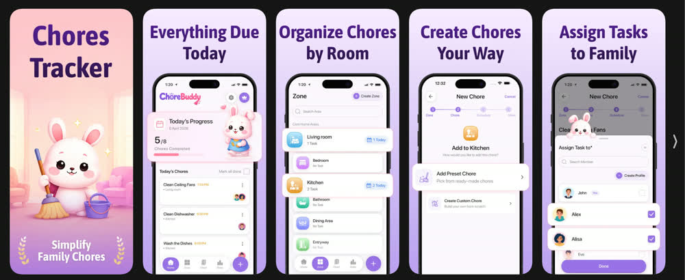
Як це складається для Moppy:
- Бренд-акцент — насичений рожево-кораловий
#FF4D6A(іконка, кнопки, активні стани). У ніші яскравий рожевий вільний: BeTidy і Tidy сидять у приглушеній пильно-теракотовій частині, обидва слабкі. - Фон — майже білий із рожевим підтоном
#FFF5F7. - Кімнати — пастельна система Chorly: у кожної кімнати свій колір картки, і він тримається скрізь (у списку, у плані, у before/after).
- Moppy — визирає з-за карток за прийомом ChoreBuddy: з-за блока «сьогодні», з-за шторки, з-за результату. Сіро-біле хутро на рожевому читається добре.
- Іконка — морда Moppy крупно, обрізана краями (урок Finch), на рожевому.
Як ми до цього дійшли — і які території закриті (історія пошуку, щоб не ходити по колу вдруге)
Кандидати, що не пройшли: глибокий індиго
- Теплі тони (кремовий, беж, кораловий) — не подобаються власнику. Закрито.
- Шавлієвий / sage — закрито: це колір галочок на пейволі Chorefriend (
#7A9367), тобто вже в ніші. - Лаванда — під питанням. Асоціація «фіолетовий = свіжість білизни» (Lenor, Downy, Febreze) робоча, і фіолетового ніхто в ніші не захищає (Housy згасає, FlyLady не рекламується), але власнику світла пастель не лягає.
Кандидати, що не пройшли: глибокий індиго
#312E81 (темна діра в ніші, але холодний і «не домашній») · медово-золотий #F5B301 · сливово-ягідний #86198F. Лишаються запасними, якщо креатив-тест рожевого не піде.
7г. Промт для Claude Design — ГОТОВИЙ ДО ВСТАВКИ
Зібраний з усіх рішень цієї вікі 28.09.2026. Копіюй блок нижче цілком. До промту ПРИКРІПИ референси: кадри онбордингу з
clean_schelude/refs/onb/ і три референси стилю ref_habittracker.jpg / ref_chorly.jpg / ref_chorebuddy.jpg — або дай прямі URL, вони публічні (у промті вже стоять).
Ти — бренд- і продуктовий дизайнер. Зроби ПОВНИЙ БРЕНДБУК і всі названі екрани
для нового iOS-застосунку. Працюй поетапно (порядок розділів нижче), після
кожного етапу показуй результат. Усі ТЕКСТИ ІНТЕРФЕЙСУ — англійською
(ринок США/tier-1). Пояснення можеш давати українською.
═══ 1. ПРОДУКТ І ЛЮДИНА ═══
Застосунок: Moppy — розклад домашнього прибирання з маскотом-другом.
Формула: скан кімнати камерою → AI розбиває безлад на мікрокроки з таймінгом
→ авторозклад веде щодня («що робити сьогодні») → маскот супроводжує і радіє.
Аудиторія: жінки 25–45, США/tier-1. Її стан — «overwhelmed», «mental load»:
вона не лінива, вона перевантажена, і вже звинувачує себе сама. Продукт — це
ДРУГ, ЯКИЙ ПРИБИРАЄ РАЗОМ З НЕЮ, а не наглядач із таблицею.
Тон (жорсткі правила):
• говоримо «зробімо разом 10 хвилин», ніколи «прострочено 3 дні»
• слова «lazy», «messy», «dirty» щодо людини — ЗАБОРОНЕНІ
• червоних бейджів прострочення НЕ ІСНУЄ в принципі
• похвала конкретна й тепла: «That looks so much better. Proud of you» —
такого рівня, але своїми словами
Конкурент для тону (не копіювати тексти дослівно): Chorefriend.
═══ 2. МАСКОТ MOPPY — ГОЛОВНЕ ЗАВДАННЯ ═══
Хто це: ЦУЦИК-ШВАБРА. У реальності існують собаки, схожі на швабру
(комондор, пулі) — персонаж читається за пів секунди. Сіро-біле кошлате
«хутро»-ганчірʼя, вухатий, метляє хвостом-ганчіркою. Він ІНСТРУМЕНТ-ДРУГ:
інструмент прибирає РАЗОМ з людиною (не ворог-бруд і не наглядач).
Вбудована механіка догляду (як пташка у Finch): попрацював разом із
господинею → сам запилюжився → його «миють» одним тапом → знову пухнастий
і щасливий. Це цикл турботи, малюй стани під нього.
Характер: теплий, трохи незграбний, щиро радіє дрібницям. Він ЧЕКАЄ, а не
дорікає. ВАЖЛИВО: милий для ДОРОСЛОЇ жінки, НЕ дитячий — без аніме-очей на
пів обличчя, без 3D-пластику дитячих застосунків (антиприклад інфантильності
— маскот ChoreBuddy).
Зроби:
• 6–8 РІЗНИХ дизайн-варіантів Moppy (пропорції, стиль лінії, ступінь
кошлатості) — від мінімалістичного до деталізованого, у м'якій
ілюстративній манері (акварельність вітається, як у Chorefriend)
• для 2 найкращих — ЛИСТ ЕМОЦІЙ: вітає зранку · чекає з ганчіркою ·
працює (метушиться) · запилюжений/замурзаний · щойно помитий, пухнастий ·
святкує закриту кімнату · спить
• АЛЬТЕРНАТИВНИЙ концепт Dusty — клубочок пилу, якого перевиховали з ворога
на помічника: 2–3 варіанти в ТИХ САМИХ сценах (вітає зранку · радіє
закритій кімнаті · запилюжився) — для порівняння з ЦА
• Moppy, що ВИЗИРАЄ З-ЗА КАРТКИ інтерфейсу (лапки на краю блока, видно
морду) — це фірмовий прийом застосунку (референс: ChoreBuddy)
═══ 3. КОЛЬОРИ — РОЛІ ЗАФІКСОВАНІ ═══
• Бренд-акцент #FF4D6A (насичений рожево-кораловий): іконка застосунку,
головні кнопки, активні стани, прогрес. Референс насиченості й
«дорослості» — Habit Tracker (147K відгуків, та сама ЦА)
• Фон екранів #FFF5F7 (майже білий із рожевим підтоном)
• Текст: темний графіт (НЕ чорний), підібрати точне значення
• ПАСТЕЛЬНА СИСТЕМА КІМНАТ (референс: Chorly) — кожна кімната має свій
колір картки, і він тримається скрізь (список, план, результат):
кухня — персик · спальня — лаванда · ванна — блакить · вітальня — рожевий ·
+ підбери ще для: кабінет, дитяча, коридор, балкон
• Семантика: успіх — м'яка зелень; попередження — бурштин; помилок майже
немає за задумом. Стан НІКОЛИ не передається лише кольором — завжди
слово або іконка поруч (доступність)
• Перевір контрасти за WCAG AA для тексту на всіх фонах
Чого НЕ робити: кремово-бежева гама (територія Chorefriend), суцільний
синій (4 з 10 конкурентів), пурпур/електрик-фіолет (FlyLady, Housy).
═══ 4. ТИПОГРАФІКА ═══
Пара «теплий СЕРІФ для заголовків + гуманістичний санс для тексту й UI».
Серіф у заголовках — свідомий хід проти «продуктивних» гротесків категорії
(так робить Chorefriend, і це працює на «книжкову» теплоту).
Запропонуй 3 пари з відкритою ліцензією (Google Fonts або еквівалент),
покажи кожну на живому екрані. Кирилиця в комплекті — вагомий плюс.
Пропиши шкалу: display / h1 / h2 / body / caption / кнопки, з розмірами в pt.
═══ 5. ІКОНКА ЗАСТОСУНКУ ═══
Композиція ЗАФІКСОВАНА: МОРДА Moppy КРУПНО, обрізана краями іконки — не
фігурка по центру (так робить Finch, і так не робить ЖОДЕН з 10 конкурентів
ніші — усі мають цілий обʼєкт по центру).
Зроби варіанти морди на 3 фонах: #FF4D6A · світлий #FFF5F7 з рожевим
акцентом · один контрольний на вибір (індиго #312E81 або медовий #F5B301).
Перевір читабельність у розмірі 60×60.
═══ 6. СИСТЕМНІ ІКОНКИ ═══
Єдиний стиль: заокруглені, дружні, лінія + мʼяка заливка активного стану,
сумісні з SF Symbols за вагою.
• Таббар (5): Today · Rooms · SCAN (центральна, акцентна, більша) ·
Progress · Profile
• Кімнати (8): кухня, спальня, ванна, вітальня, кабінет, дитяча, коридор,
балкон — у парі з пастеллю своєї кімнати
• Службові: налаштування, сімʼя/учасники, нагадування, преміум (корона або
своє), назад, закрити, плюс, календар, таймер
═══ 7. ЕКРАНИ ОНБОРДИНГУ — СТРУКТУРА CHOREFRIEND, АДАПТОВАНА ═══
Ми розкадрували весь онбординг Chorefriend (референс-кадри додаю; вони ж
публічно: https://redalxy.github.io/pm-apps-handbook/clean_schelude/refs/onb/ ).
Малюй ЗА ЦІЄЮ СТРУКТУРОЮ, крок за кроком, але в айдентиці Moppy і з трьома
свідомими замінами, позначеними ★.
ЧАСТИНА 1 · Знайомство (3 слайди):
1. «Clean together, not alone» — Moppy в намальованій ізометричній кімнаті;
слайд — АНІМОВАНИЙ before/after: кімната з завалу стає чистою (у них
так само, кадри q00_dirty + 01_together)
2. ★ НАША ЗАМІНА: слайд про СКАН — «Snap your mess, get tiny steps»:
фото кімнати → список мікрокроків (у Chorefriend цього слайда немає,
це наша головна фіча-гачок)
3. «A voice in your corner» — аудіо-компаньйон, плеєр із хвилею
(кадр 02_voice)
Внизу скрізь: Get started · I already have an account · Terms/Privacy.
ЧАСТИНА 2 · Квіз «хто ти» (прогрес-бар згори, Moppy в шапці):
4. Вік (6 діапазонів) — кадр-зразок формату: рядки-кнопки
5. З ким живеш (сама / сімʼя / партнер / співмешканці) — з емодзі
6. Як часто накриває від домашніх справ (кадр q04)
7. Що саме виснажує — множинний вибір (кадр q05)
ЧАСТИНА 3 · Квіз «твій тип»:
8. Місток-обіцянка: «A few quick questions to find your cleaning
personality type» (кадр q06)
9. Впізнавання Yes/No: «There's a room I've given up on. I just close
the door.» (кадр q07) — конкретна сцена, НЕ абстракція
10. Що заважає почати — множинний (кадр q08)
11. Шкала з 5 кружечків Never→Always: «The pile keeps growing because
I tell myself I'll deal with it later» (кадр q09)
12. Екран-полегшення: «It's not a lack of motivation. It's household
overwhelm. We've found a technique for it.» + ілюстрація Moppy за
«дослідженням» (кадр 03_overwhelm)
★ ВИКИНУТО їхнє питання «How often do you blame yourself…» («звинувачуєш
себе, називаєш лінивою») — тикання в сором суперечить нашому тону.
ЧАСТИНА 4 · ЯДРО ВОРОНКИ:
13. ★ НАША ЗАМІНА ГОЛОВНОГО ЕКРАНА: замість текстового поля «What's a
chore you've been avoiding?» (кадр q12) — екран СКАНУ: «Show Moppy
the room that's been weighing on you» з кнопкою камери й запасним
«Type it instead» + чипи-підказки (declutter my closet · clean out
the kitchen · open the mail pile). Камера бачить реальний стан —
це сильніше за текст.
14. «How long has this been weighing on your mind?» (кадр q13):
hours / a day or two / about a week / weeks / months —
ЦЯ ВІДПОВІДЬ ПОВЕРТАЄТЬСЯ на кроці 16.
ЧАСТИНА 5 · Видача цінності й пейвол:
15. Генерація плану: 4 смужки прогресу («Analyzing your patterns»,
«Sizing first steps to your space»…) + відгук 5★ під ними, поки
людина чекає (кадр 05_building). Moppy «працює» на екрані.
16. НАЙСИЛЬНІШИЙ СЛАЙД: дві смуги — довга (колір тягаря, НЕ червоний
алярм): «Weighing on you for about a week» (її відповідь із кроку 14!)
і коротка акцентна: «First step takes 4 min» (кадр 06_4min)
17. Демо результату: «All done · Living room · 43s · 8 steps», before/after
НАМАЛЬОВАНОЇ кімнати (не фото!), стрік тижня, похвала Moppy
(кадр 07_transform)
18. План готовий: крок 01 ВИДНО ПОВНІСТЮ («Put away loose items on
counter · 2 min»), кроки 02–05 РОЗМИТІ, «+5 more steps», кнопка
«Unlock Your Plan» (кадр 08_unlock)
19. ПЕЙВОЛ: Moppy-герой угорі · серіфний заголовок · 4 бенефіти з
галочками (мовою стану: «Finally have a calm & clean space») ·
два плани. ★ ЧЕСНА ВЕРСІЯ, не як у них: ПРЕДВИБРАНИЙ РІЧНИЙ з
тріалом 7 днів, кнопка «Start my 7-day free trial», «No payment
due now», під кнопкою повна ціна прописом. Тріал не ховаємо.
(кадри q20_paywall_a і 09_paywall_b — як у них, для порівняння)
═══ 8. ПРОДУКТОВІ ЕКРАНИ (по одному макету) ═══
A. Головний «Today»: ОДНА поточна справа великою карткою (колір її
кімнати) + Moppy визирає з-за картки; нижче — маленька черга на
сьогодні. Це АНТИ-таблиця: жодних сіток на 365 днів, жодних
відсотків на головному.
B. Флоу скану (3 екрани): камера з підказкою «show me the mess» →
«Moppy is looking…» (аналіз, маскот «роздивляється» фото) →
список мікрокроків із таймінгом, кожен крок можна почати
C. Результат «All done»: before/after мальованої кімнати + Moppy
святкує + «wash Moppy» тап (він запилюжився за роботу)
D. Кімнати: сітка карток у пастелях системи
E. Live Activity на лок-екрані: Moppy чекає з ганчіркою + прогрес
кімнати + кнопка RESUME (референс механіки — Chorefriend, але в
нас із персонажем)
F. Віджет домашнього екрана (small + medium): одна наступна справа
+ Moppy; стан «усе зроблено» — Moppy спить
═══ 9. ФОРМАТ ЗДАЧІ ═══
• Мокапи 390×844 (iPhone), світла тема
• Брендбук одним документом: логотип (знак-морда + словесний «Moppy»),
палітра з ролями і hex, типографіка зі шкалою, іконографіка, персонаж
з листом емоцій, tone of voice із прикладами фраз EN, do/don't
• Кожен розділ — окремим повідомленням, чекай мого «далі»
Референси стилю (публічні):
https://redalxy.github.io/pm-apps-handbook/clean_schelude/refs/ref_habittracker.jpg
https://redalxy.github.io/pm-apps-handbook/clean_schelude/refs/ref_chorly.jpg ← пастельні блоки
https://redalxy.github.io/pm-apps-handbook/clean_schelude/refs/ref_chorebuddy.jpg ← маскот визирає з-за картки
Повна вікі проєкту: https://redalxy.github.io/pm-apps-handbook/clean_schelude/
7б. Розкадровка референсів поповнюється
Живі кадри, зняті власником з реальних застосунків. Кожен — із розбором «що беремо / чого не беремо», щоб дизайн-промт спирався на факт, а не на переказ. Кадри лежать у
clean_schelude/refs/ цього ж репо.Chorefriend · ВЕСЬ ОНБОРДИНГ від першого екрана до пейволу розкадровка 6-хв відео
Відео власника (5 хв 57 с) нарізано на кадри ffmpeg 27.09.2026. Нижче — карта воронки й девʼять ключових кадрів. Головне, що видно: людину доводять до оплати ЩЕ ДО першого використання застосунку, а весь шлях займає близько шести хвилин.
0:00Три слайди знайомства. Маскот у намальованій ізометричній кімнаті · «Get started» / «I already have an account»
0:40Квіз починається. Вік → склад дому → що саме виснажує → як часто звинувачуєш себе. Прогрес-бар угорі, маскот у шапці
1:50Пояснення-полегшення посеред квізу: «це не брак мотивації, це household overwhelm»
3:10Псевдо-аналіз із соцдоказом: чотири смужки «аналізуємо твої патерни…» + відгук 5★ під час очікування
3:40Обіцянка числом: «перший крок займе 4 хвилини» — дві смуги, тиждень тягаря проти 4 хвилин
4:40Демонстрація фіч: before/after кімнати, стрік, похвала маскота
5:10План готовий — і заблюрений. Перший крок видно, решта розмита, «+5 more steps», кнопка «Unlock Your Plan»
5:40Пейвол. Тріал 7 днів, $49.99/рік
Частина 1 · Знайомство (0:00–0:35)
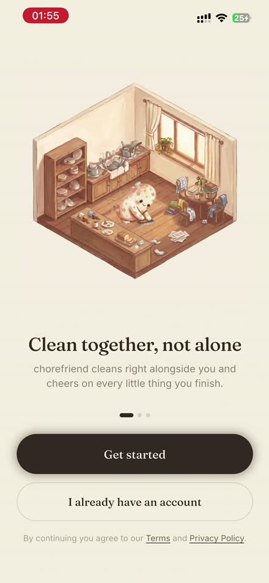
Кімната ЗАВАЛЕНА: посуд, папери, речі на підлозі. Маскот стоїть посеред безладу.
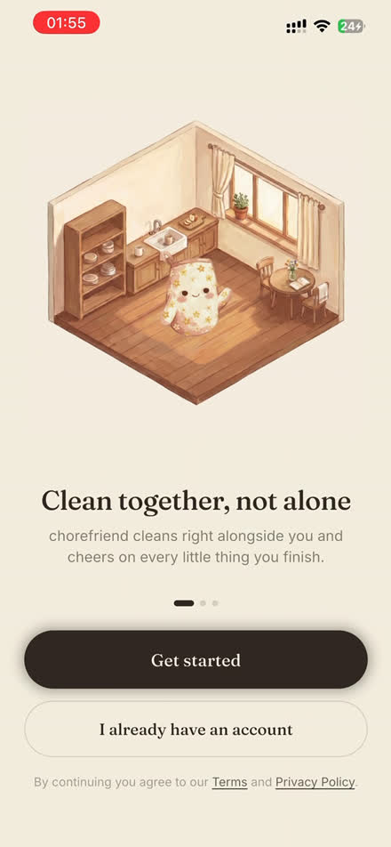
Та сама кімната ЧИСТА. Тобто слайд — анімований before/after, який грає сам. «Clean together, not alone».
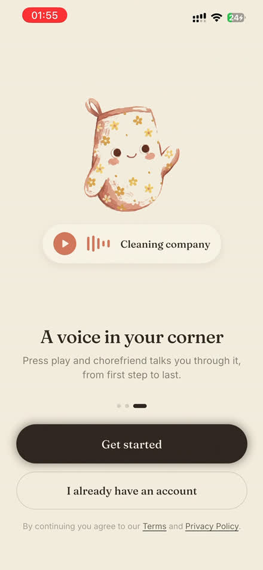
Плеєр із підписом «Cleaning company» — гра слів: і клінінг-фірма, і товариство.
Частина 2 · Квіз, блок «хто ти» (0:40–1:20)
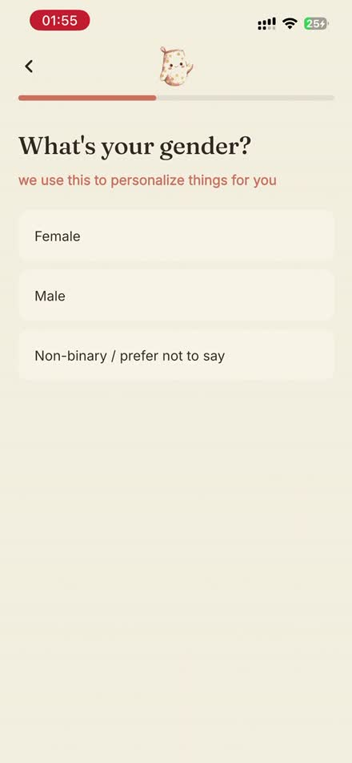
«we use this to personalize things for you». Female / Male / Non-binary.
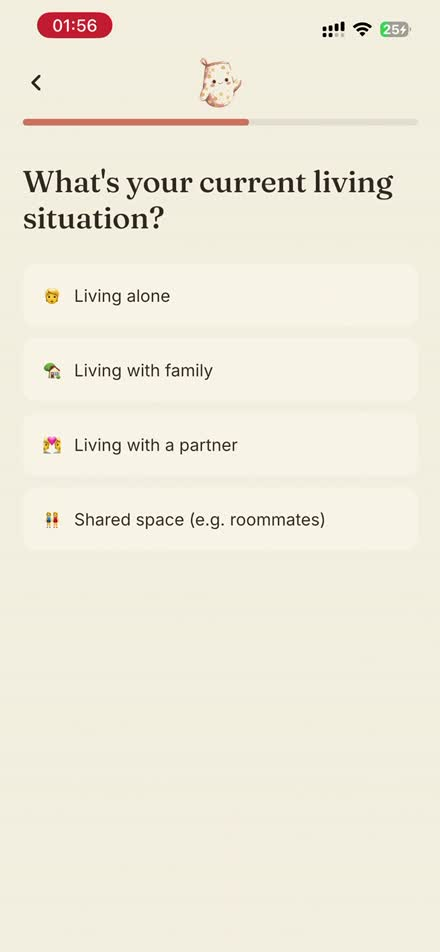
Сам / із сімʼєю / з партнером / зі співмешканцями — з емодзі.
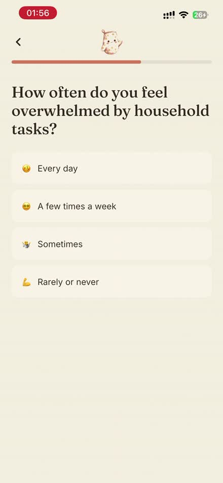
«How often do you feel overwhelmed by household tasks?»
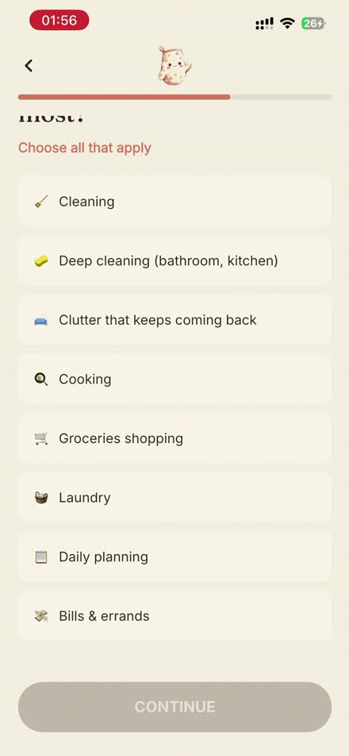
«Choose all that apply»: прибирання · генеральне · клатер · готування · закупи · прання · планування.
Частина 3 · Квіз, блок «твій тип» (1:24–2:40)
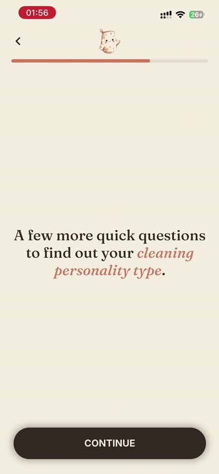
«A few more quick questions to find out your cleaning personality type». Типологія — те, що люди люблять проходити до кінця.
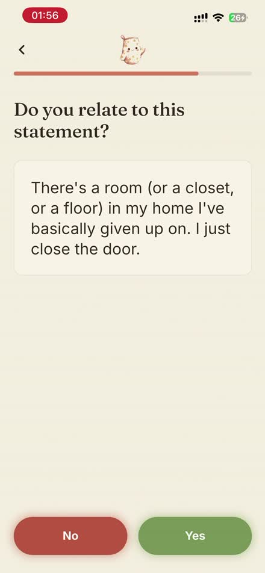
«Є кімната (чи шафа, чи підлога), на яку я забила. Я просто зачиняю двері». Yes / No. Конкретна сцена замість абстракції.
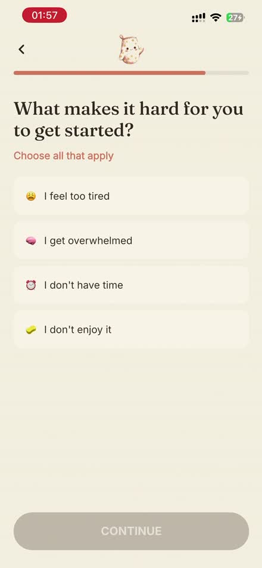
Втомлена · накриває · немає часу · не люблю. Множинний вибір.
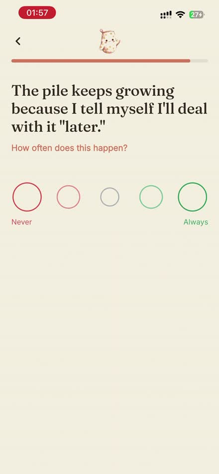
«Купа росте, бо я кажу собі "потім"». Пʼять кружечків Never→Always, розмір і колір ростуть.
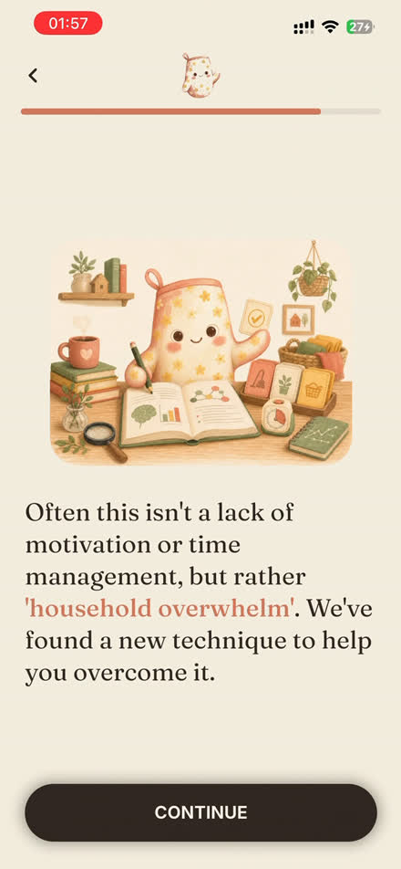
«Це не брак мотивації чи тайм-менеджменту, це household overwhelm. Ми знайшли техніку».
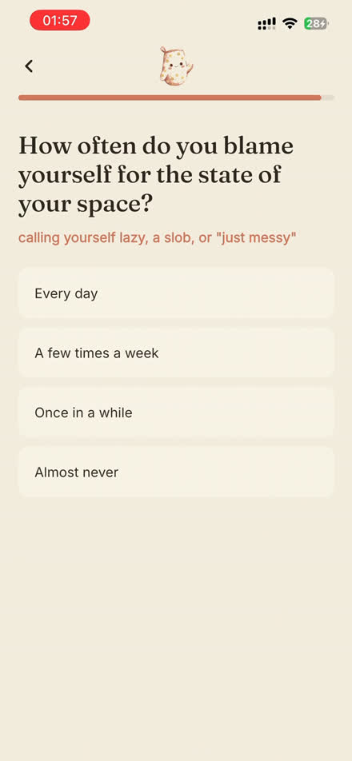
«Як часто ти звинувачуєш себе за стан свого простору?» — «називаєш себе лінивою, нечупарою, "просто неохайною"».
Частина 4 · ЯДРО ВОРОНКИ (2:48–2:56)
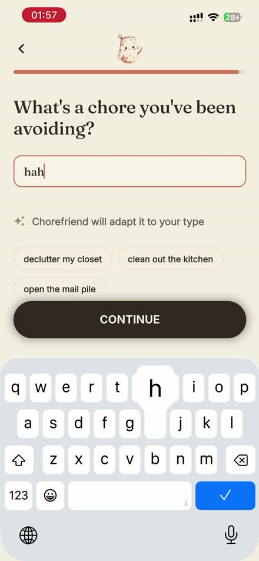
ВІЛЬНЕ ПОЛЕ ВВОДУ плюс чипи-підказки: «declutter my closet», «clean out the kitchen», «open the mail pile». Під полем — «✨ Chorefriend will adapt it to your type».
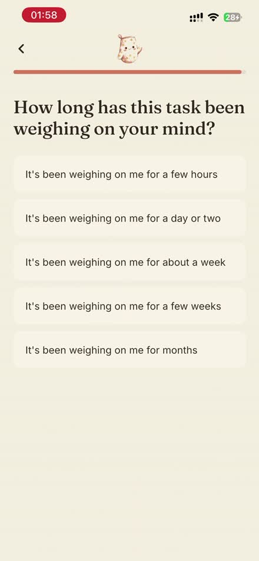
Кілька годин · день-два · близько тижня · кілька тижнів · місяці. Саме ця відповідь повернеться через 40 секунд.
Частина 5 · Видача цінності й пейвол (3:10–5:52)
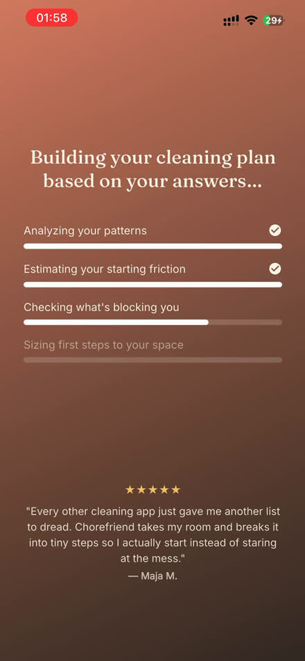
Чотири смужки («аналізуємо патерни», «оцінюємо стартове тертя»…) і відгук 5★ просто під ними. Саме з цього екрана доганяє Live Activity.
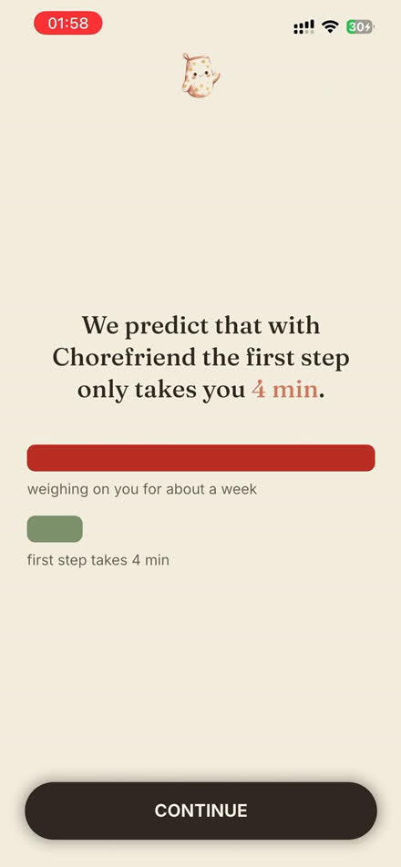
Червона смуга — «тисне на тебе десь тиждень» (її ж відповідь із 2:56!). Зелена — «перший крок 4 хв».
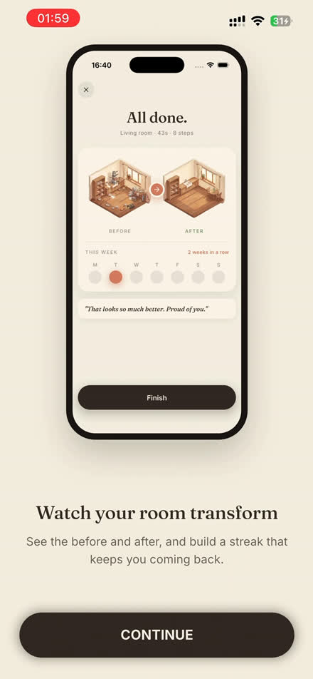
«All done · Living room · 43s · 8 steps», before/after МАЛЬОВАНОЇ кімнати, стрік тижня, «That looks so much better. Proud of you.»
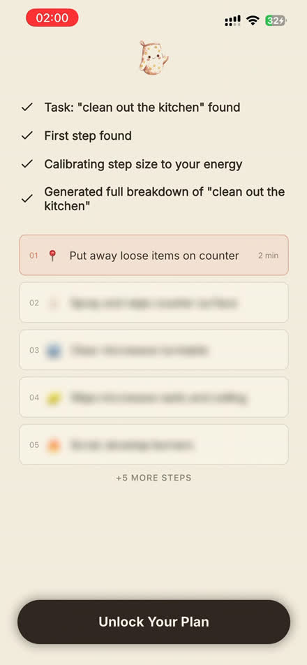
Крок 01 видно повністю («Put away loose items · 2 min»), кроки 02–05 РОЗМИТІ, «+5 MORE STEPS» → «Unlock Your Plan».
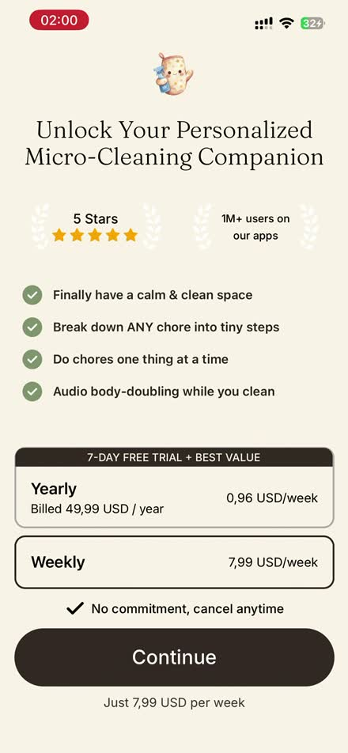
ТИПОВО вибраний Weekly $7.99/тиж, кнопка «Continue», унизу «Just 7,99 USD per week». Тріал тут не згадується.
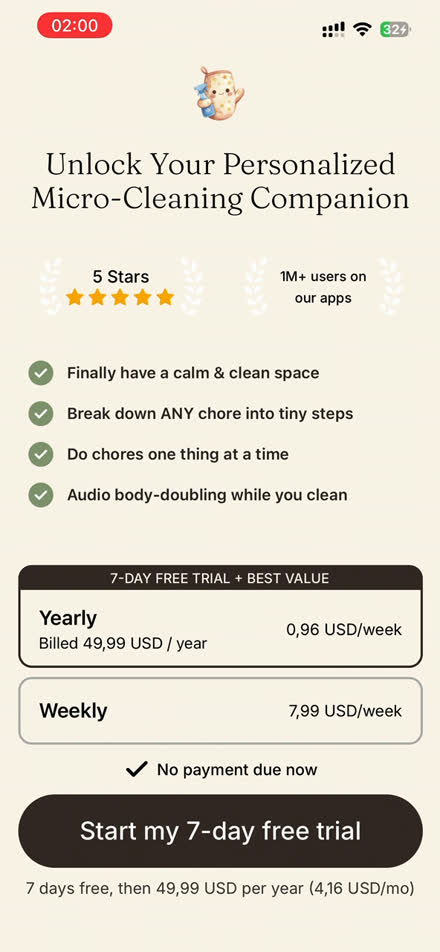
Кнопка МІНЯЄТЬСЯ на «Start my 7-day free trial», зʼявляється «No payment due now». Тобто тріал треба знайти самому.
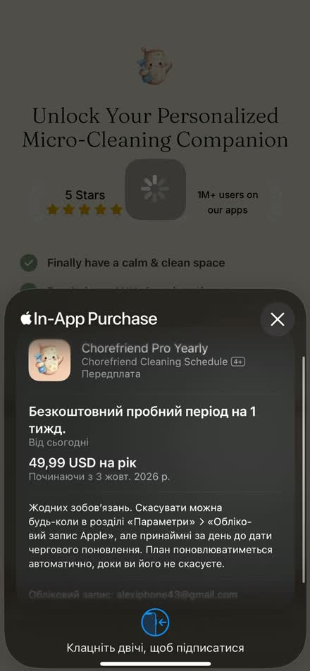
«Chorefriend Pro Yearly · Безкоштовний пробний період 1 тижд. · 49,99 USD на рік».
ГОЛОВНЕ ВІДКРИТТЯ ВСІЄЇ РОЗКАДРОВКИ: вся воронка будується навколо ОДНІЄЇ справи, яку людина вписала СВОЇМИ СЛОВАМИ.
- На 2:48 її просять назвати справу, яку вона уникає — вільним полем.
- На 2:56 питають, як довго та справа тисне на неї.
- На 3:40 повертають обидві відповіді контрастом: «тисне тиждень» проти «перший крок — 4 хвилини».
- На 5:10 показують план саме для цієї справи — з видимим першим кроком і розмитою рештою.
- І навіть Live Activity на лок-екрані каже не «повернись у застосунок», а «Clean out the kitchen» — її власними словами.
ЩО БЕРЕМО — сім прийомів, кожен окремо:
- Квіз як онбординг. Людина відповідає на питання про СЕБЕ — і тому план сприймається персональним. Наш скан кімнати сильніший за їхній квіз (камера бачить реальний стан), але сама рамка «спершу зрозуміємо тебе, потім дамо план» працює.
- Зняти провину, давши проблемі назву. «Household overwhelm» — не діагноз і не звинувачення. Це те саме, чим люди пишуть 5★ у відгуках; ми вже поклали цю мову в основу тону.
- Обіцянка ЧИСЛОМ, а не словами. «Перший крок — 4 хвилини» проти «тижня тягаря», двома смугами. Найсильніший слайд усієї воронки.
- Соцдоказ саме в момент очікування — коли людина й так дивиться на екран і не може нічого робити.
- Показати результат ДО роботи: before/after і стрік демонструють ще до першого прибирання.
- Before/after — МАЛЬОВАНА кімната, не фото. Хитро: фото «після» ніхто не робить, а ілюстрація завжди гарна. Для нас — просто, бо в нас і так буде своя графіка.
- Заблюрений план. Перший крок видно (доказ, що план реальний і дрібний), решта розмита. Це не «купи кота в мішку» — це «кіт уже твій, лишилось відкрити».
ЧОГО НЕ БЕРЕМО:
- Оплата ДО першого використання. Уся воронка веде до пейволу, а застосунком людина ще не користувалась. Це дає конверсію, але й ті самі 1★ «charged me not cool», які ми читали в їхніх відгуках. Наше рішення лишається: 1–2 безкоштовні скани, щоб перше «вау» сталось БЕЗ гаманця.
- Шість хвилин до цінності. Довгий квіз — це відвал. Нам вистачить чотирьох-пʼяти питань, бо решту скаже фото.
- Питання в сором («називаєш себе лінивою?»). Мова болю — так, тикання в сором — ні: у відгуках видно, що присоромлення веде до видалення.
Chorefriend · Live Activity на лок-екрані — ЯК ВОНИ ДОГАНЯЮТЬ ДО ПОКУПКИ головний прийом
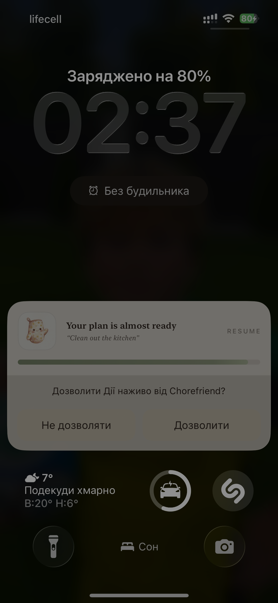
chorefriend_liveactivity_01 · лок-екран, 02:37
Що відбувається: людина почала складати план і не дійшла до кінця. Замість push-сповіщення Chorefriend вішає на ЛОК-ЕКРАН Live Activity (ActivityKit, iOS 16.1+): маскот, заголовок «Your plan is almost ready», підзаголовок «Clean out the kitchen», майже повний прогрес-бар і кнопка RESUME. Знизу — системний запит «Дозволити Дії наживо від Chorefriend?».
ЧОМУ ЦЕ СИЛЬНІШЕ ЗА PUSH — і чому ми це беремо:
Для Moppy це лягає ідеально, бо в нас є маскот. Їхня Live Activity — це картинка з прогресом. Наша може бути ЖИВОЮ: Moppy на лок-екрані чекає з ганчіркою, поки кімната не закрита, і радіє, коли закрита. Той самий канал, але з персонажем, якого вже полюбили, — це різниця між «застосунок нагадує» і «друг чекає».
- Воно не зникає. Push живе секунди й тоне в шторці. Live Activity висить на лок-екрані годинами — людина бачить його ДЕСЯТКИ разів за вечір, щоразу беручи телефон.
- Ефект незавершеності. «Майже готовий» + майже повна смужка — мозок не терпить незакритого прогресу. Це не обіцянка вигоди, це свербіж.
- Окремий дозвіл. «Дії наживо» — НЕ той самий дозвіл, що push. Відмовила пушам — цей канал усе одно доступний, і просять його окремо.
- Правильний момент запиту. Дозвіл просять не на старті (де всі тиснуть «не дозволяти»), а в мить, коли план уже майже готовий і цінність очевидна.
- Один тап у пейвол. RESUME повертає рівно туди, де стоїть оплата. Шлях «лок-екран → покупка» без жодного зайвого екрана.
Межа, яку не переходимо: Live Activity про НЕЗАВЕРШЕНУ СПРАВУ — чесний прийом. Live Activity, яка висить лише щоб нагадати про оплату, — ні. Прогрес на лок-екрані має відповідати реальному стану прибирання, інакше це те саме присоромлення, від якого люди видаляють застосунки.
Chorefriend · Пейвол крупним планом (знято 27.09.2026)
Уточнення до першого розбору: це НЕ A/B-тест, як я спершу припустив. Розкадровка показала, що це ОДИН екран — просто кнопка й підпис міняються залежно від обраного плану. Відкривається він із вибраним тижневим (без згадки тріалу), а тріал зʼявляється, лише коли людина сама тапне по річному.
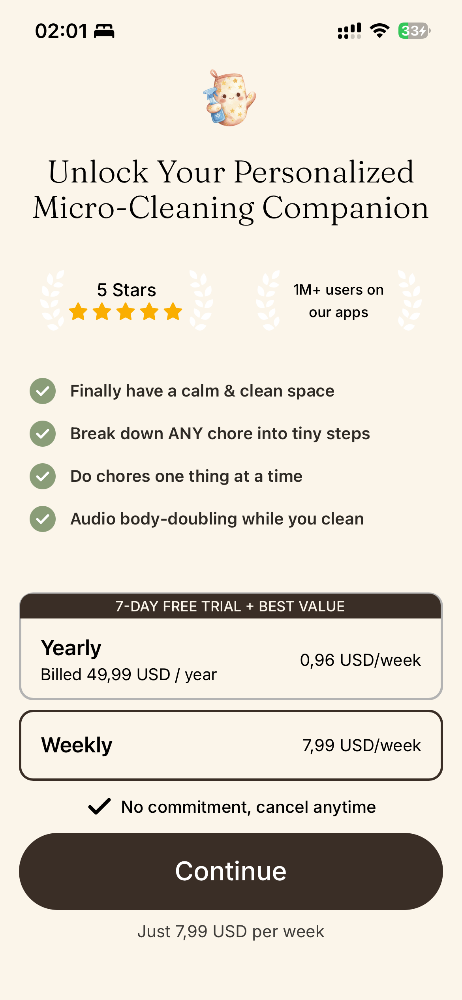
chorefriend_paywall_01 · iPhone
Що на кадрі: акварельний маскот — кухонна РУКАВИЧКА з обличчям і пшикалкою · серіфний заголовок «Unlock Your Personalized Micro-Cleaning Companion» · соцдоказ у лаврах («5 Stars» + «1M+ users on our apps») · 4 бенефіти з зеленими галочками · два тарифи · «No commitment, cancel anytime» · велика кнопка «Continue» · під нею ціна.
#FAF1E4
фон
фон
#3B2E26
чорнило/CTA
чорнило/CTA
#7A9367
галочки
галочки
#F2B233
зірки
зірки
БЕРЕМО:
- Маскот — герой пейволу, а не логотип у кутку. Він угорі, великий, дивиться на тебе. Рівно те, що ми плануємо з Moppy.
- Принцип «не корпоративно». Темно-коричневий замість чорного, мʼякий фон — домашньо, не «продуктивно». Принцип беремо, САМУ кремову палітру — ні: власник теплих тонів не хоче, наша територія лавандова (розділ 7в).
- Серіфний заголовок — рідкість у категорії, дає відчуття «книжкової» теплоти проти звичних гротесків конкурентів.
- Бенефіти — мовою стану, не фіч: «Finally have a calm & clean space», «Do chores one thing at a time». Те саме, чим люди пишуть 5★ у відгуках.
- «Break down ANY chore into tiny steps» — підтвердження, що мікрокроки вони самі вважають головним аргументом до оплати.
НЕ БЕРЕМО:
Нова фіча, якої не було в матриці: «Audio body-doubling while you clean» — аудіо-компаньйон, що «складає компанію» поки прибираєш (ADHD-техніка body doubling). Для нас це природне продовження маскота: голос Moppy, який веде по мікрокроках. Кандидат у Premium, дешевий у реалізації (аудіо + таймер), сильний у креативі.
- Предвибраний ДОРОЖЧИЙ план (лише у варіанті А). Жирна рамка стоїть на Weekly, кнопка каже «Just 7,99 USD per week» — тобто тап по «Continue» без роздумів купує тижневий за $415/рік, тоді як річний коштує $49.99. Бейдж «BEST VALUE» висить при цьому на річному — виглядає чесно, працює навпаки. Це прямий шлях до 1★ «charged me not cool», які ми вже бачили в їхніх же відгуках. І розкадровка показала гірше: тріал узагалі НЕ згадується, доки людина сама не тапне по річному плану — тобто найвигідніший і найбезпечніший варіант заховано за зайвим тапом.
- «1M+ users on our apps» — не про цей застосунок, а про портфель студії. Ми таких формулювань не пишемо.
- Тріал без явного «нагадаємо за 2 дні до списання» — наше правило з розділу відгуків.
Ціновий факт для нашої лінії: річний Chorefriend — $49.99, тижневий — $7.99. Це вище за Sweepy ($19.99/рік) і вище за коридор, який ми записали ($29–39). Ніша тримає $50/рік, якщо є AI-фіча й маскот. Пропоную у спліт додати третю точку — $49.99/рік — і перевіряти її проти $29.99 і $39.99.
8. Потенціал: скільки ринку не зайнято
Ринок ядра
$330K/міс
Найменший із топ-5 — але й найдоступніший
Лідер і вільна частка
33% / 67%
Sweepy — і виграє він ОБСЯГОМ на найдешевшому чеку ($19.99/рік), а не продуктом: у його ж відгуках лежить список того, чого йому бракує
Незайнятий попит
14 з 16
Стільки гравців не купують трафік узагалі. Плюс Nipto: 671K інсталів і <$10K — соціальний кут без грошей
Новачок дійшов за
2 міс
Chorefriend: 0 → $26K/міс за 60 днів на ~4 оголошеннях
Стадія
🟢 Рання
Велетня немає; жодного повноцінного маскота-компаньйона в ніші
9. Методологія і статус даних
- Доходи й завантаження — SensorTower із deep-dive бази Niche Scout, знято 01.09.2026 (Worldwide, Last Month). Chorsee/Squeaky/Chorly у той прогін не потрапили — додати в наступний запит агенту.
- Обережно з АГРЕГОВАНИМИ рядками бази. У вересневому deep-dive «Housy / Tidy» стояли ОДНИМ рядком зі спільним вердиктом «згасають» — і це сховало живого гравця: у Tidy 1 857 відгуків, ★4.67 і версія від 24.09.2026. Знайшов це власник. Правило на майбутнє: кожен застосунок перевіряти окремим запитом у стор, навіть якщо база звела його з сусідом.
- Видача, іконки, рейтинги, кількість відгуків — iTunes Search API, живі, 26–27.09.2026.
- Відгуки — офіційний RSS App Store, найсвіжіші ~150 штук по 6 застосунках, прочитано 27.09.2026. Google Play цим каналом не покривається — чекає агента власника (SensorTower-промт уже в нього).
- Популярність ключів — Apple Search Ads 08.2026 через наш трекер; усе ядро ніші — «нижче топу жанру» (це обмеження методу, не нуль попиту).
- Ваги фіч у графіку — частота теми в прочитаних відгуках; це якісна вага, не статистика.
- Маркетинг — Meta Ad Library (липень–вересень 2026); TikTok знімає картка t3a7473.
Niche Scout · LLM Wiki проєкту Clean Schedule · складено 27.09.2026 · споріднене: зведення топ-5 ніш · дитячий замок-за-завдання · риболовля